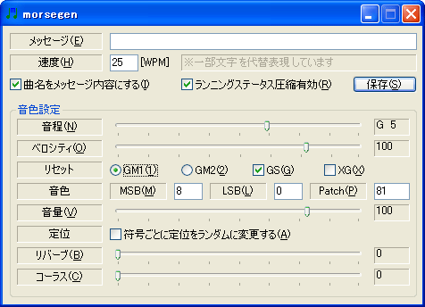

morsegenは、文字列をモールス符号に変換し、標準MIDIファイルとして出力するソフトウェアです。
はじめに
近年、通信技術は著しい発達を遂げて、モールス信号を使う必要もなくなってきました。時の中に埋もれていってしまう日も遠くはないでしょう。そんな過去の技術に触れて楽しむ機会をmorsegenがすこしでも提供できたならうれしく思います。
また、moresgenはわりと音楽的な演奏情報の生成を行いますので、メッセージを楽曲に取り込みやすいです。あなたの曲にこっそりと素敵なメッセージを隠してみませんか（私はぜひこれに挑んでみたいです）。
morsegenは、SMFを読み書きするライブラリ、smfw32.dllを使ったプログラムです。じつは本体の開発よりもライブラリの開発に注力しています。morsegenのほかにもさまざまな場面で利用することができるでしょう。
動作環境
morsegenを利用するには、以下の条件を満たす環境が必要です。
- Windows2000/XP （smfw32.dllが内部でUnicodeを使用しているので、Windows9xでは動作しない可能性あり）
- .NET Framework 1.1以降
MIDI用の音源とプレーヤーも必要ですが、あわてて用意しなくても大抵なにか入っています。
使い方

メッセージ
モールス符号に変換したいメッセージを入力します。和文・欧文どちらでも入力でき、ひらがな・カタカナ・アルファベット・数字・一部の記号を変換できます（半角カタカナには対応していません。全角カタカナか、ひらがなを使用してください）。和文の拗音と促音は直音で代替表現しています。
和文と欧文が混在していても変換をおこないますが、符号の取り決め上、不要な混在は避けるべきでしょう。ちなみに、和文モールスコードにおけるアルファベットは、その部分を丸かっこでくくって表現します。
モールス符号の定番であるSOSは例外処理されています。半角アルファベットでSOSと入力した場合、S O Sの3つの符号ではなく、SOSというひとつの符号として変換します。SOS以外の文字が含まれるメッセージには例外処理を行いません。
速度
通信速度をWPM単位で設定します。WPMとは短点50個分（1ワード）の1分間当たりの出現回数のことです。短点50個の基準としてPARIS
の符号を用いることが多いため、PARIS速度とも呼ばれます。
曲名をメッセージ内容にする
チェックすると、メッセージの内容を曲名として設定します。この曲名は多くのプレーヤーで表示可能です。
ランニングステータス圧縮有効
チェックすると、ランニングステータスルールを適用してファイルサイズを小さくします。チェックの有無が信号に影響を与えることはありません。
音程
モールス符号の音程を設定します。
ベロシティ
モールス符号のベロシティを設定します。ここでいうベロシティとは鍵盤を叩く強さのことです。とくに変更する必要はありません。
リセット
ファイルに含める音源のリセットメッセージを設定します。GM1/GM2/GS/XGを設定可能です。初期設定のままでとくに問題はありません。
音色
モールス符号の音色を設定します。バンクナンバーとプログラムナンバーを入力します。番号はGMの取り決めなどを参照してください。初期設定のままにしておくと、多くの音源で正弦波が鳴らせるはずです。
音量
モールス符号の音量を設定します。大抵の音源では、音量は対数変化になっています。
定位
- 符号ごとに定位をランダムに変更する
- チェックすると、符号ごとに音の位置をランダムに設定します。お遊び機能です。
リバーブ
モールス符号にかける残響の具合を設定します。音源側がリバーブ（CC#91）に対応している必要があります。
コーラス
モールス符号にかけるコーラス効果の具合を設定します。音源側がコーラス（CC#93）に対応している必要があります。
よくある質問
生成した信号の使用に制限はありますか
一切ありません。自由に使用してください。
信号の解読機能はないのでしょうか
ありません。morsegenで生成したファイルだけならまだしも、他の手段で生成した信号に対応することは一筋縄ではいかないからです。
morsegenの場合、メッセージ内容を曲名に設定して出力すると、簡単にファイルから符号の内容をつかむことができます。「私ね、暗号通信に使いたいからそれはいやなの…」という方もいるかもしれませんが、モールス符号は暗号ではありませんので、そのアプローチは間違いでしょう。別の手段を考えてください。
メッセージをテキストファイルから読みこめますか
読み込めません。長いメッセージを真面目に送信する用途をあまり想定していないからです。
wavファイルとして出力できますか
できません。MIDI音源から録音してwavファイルを作成するといいでしょう。音質もいいですし。
画像を出力できますか
できません。方向性が異なるので今後実装することもありません。
moemoe-softってなんですか
なんのことでしょうか（笑）
ライセンス情報・連絡先
改版履歴
1.1 (2005年11月27日)
- 通信速度をユーザ入力に変更
- SOSを例外処理するように変更
- 音程とベロシティの変更が可能になりました
1.0 (2005年11月26日)
- 初版